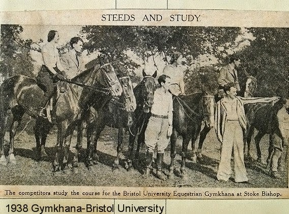
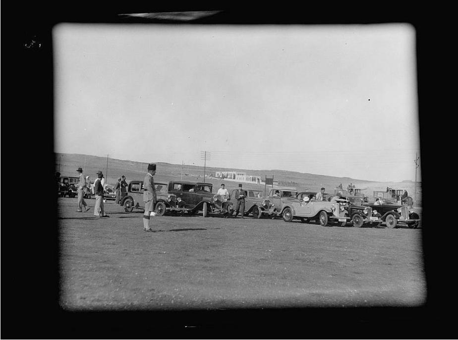

Les origines du gymkhana

Le gymkhana automobile tire ses racines du mot indien "gymkhana", qui
désignait à l’origine des compétitions d’adresse équestres organisées par les
officiers britanniques en Inde au XIXe siècle. Ces épreuves mettaient en avant
la précision et le contrôle du cheval, plutôt que la vitesse. Avec le temps, ce
concept s’est adapté à d’autres formes de sports mécaniques, notamment la
moto et l’automobile.
L’apparition dans le monde automobile

C’est dans les années 1940-1950 que le gymkhana automobile est né,
d’abord au Royaume-Uni et aux États-Unis. Les conducteurs cherchaient à
tester leurs capacités de pilotage sur de petits circuits fermés, souvent
improvisés sur des parkings ou des terrains plats. Les épreuves consistaient à
manœuvrer entre des cônes, des barrières ou des obstacles, en réalisant des
virages serrés, des demi-tours et des freinages précis.
Le développement au Japon

Le Japon a joué un rôle majeur dans la popularisation du gymkhana. Dès les
années 1970, les pilotes japonais ont commencé à organiser des compétitions
officielles, soutenues par la Japan Automobile Federation (JAF). Le
gymkhana y est devenu une discipline reconnue, avec des règlements stricts
et des catégories selon la puissance et le type de véhicule. C’est aussi au
Japon que le sport a pris un aspect plus technique et spectaculaire, avec des
pilotes cherchant la perfection dans la précision.
L’arrivée dans la culture populaire

Dans les années 2000, le gymkhana a gagné une visibilité mondiale grâce à
Internet et à des pilotes célèbres comme Ken Block. Ses vidéos
spectaculaires, publiées sur YouTube sous le nom de “Gymkhana Series”, ont
montré des voitures ultra-préparées exécutant des manœuvres
impressionnantes dans des environnements urbains ou industriels. Ce style
mêlant drift, vitesse et précision a rendu la discipline populaire auprès d’un
large public.
Les voitures utilisées

Dans le gymkhana, presque tous les types de voitures peuvent être utilisés, du petit modèle à traction avant jusqu’à la voiture de rallye hautement modifiée. Les modèles les plus célèbres sont souvent des Subaru Impreza WRX STI, Ford Fiesta ST, ou Mitsubishi Lancer Evolution. Ces véhicules sont
choisis pour leur maniabilité, leur puissance contrôlable et leur capacité à
effectuer des drifts précis sur de courtes distances.
Le gymkhana aujourd’hui